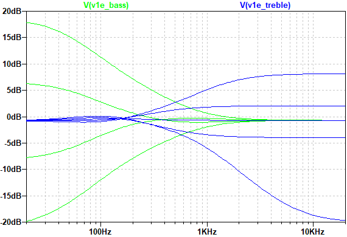

Tech 21 SansAmp Bass Driver DI V1初期型 解析
2022年03月16日 カテゴリー：修理・改造・解析

昔製作したBEHRINGER BDI21は、Tech 21 SansAmp Bass Driver DI（以下BDDI）のクローンだと思われていました。しかし、本当にそうなのか確認されていたわけではありませんでした。そこでBDDI実機を入手して分解・トレースし、BDI21が正確なクローンなのか解明してみることにしました。
BDDIは2016年にV2が発売され、それまでのモデルはV1と呼ばれることがあります。そしてV1の中でスライドスイッチが1個のものは初期型又は前期型、スライドスイッチが3個のものは後期型といわれ区別されます。本ブログでは、それぞれV1初期型、V1後期型、V2というように表記することにします。※上写真のV1初期型は、オリジナルとは違うジャック、LED、スイッチに交換してあります。
＜モールドとの闘い＞
基板上の黒いモールド部分は、かなり硬く砂のような成分が入っている感触でした。熱には弱いようで、はんだごてを当てると溶けますがにおいがキツいです。熱でコンデンサの値が変化するのを避けたかったので、大きいニッパーでガリガリ削っていきました。端の方はポロっと割れる部分があったのですが、コンデンサの端子部分がはがれて測定不能になるものが出てきてしまい失敗でした。IC周辺はヒートガンを使ってはがしました。
測定不能になったコンデンサの値が気になったため、別のジャンク品を手に入れ、モールドの裏側からやすりで削っていきました。
配線パターンは少し読みにくいです。何とか成功しましたが、この方法でもコンデンサの端子部分がはがれそうになっていました。結局はモールドの裏側からホットエアーを当てて一気にはがす方法がよいかもしれません。後から燃料用アルコールに2週間くらい漬けてみましたが、少しだけ柔らかくなる程度で効果は薄かったです（参考ページ→Bogner Burnleyの修理）。
2025年1月14日追記：Tech 21 XXLのモールド部をホットエアーで剥がしている記事がありました。
ICは表面が削れられた後からモールドされたようで、型番はわかりませんでした。おそらくV1後期型やV2と同じTLC2264でしょう。（裏面の刻印の形式がモールド外についていたTLC2264と同じなので、Texas Instruments製であることは確かだと思います。）
＜基板画像・回路図＞（KiCadデータ・高解像度画像はGitHubへ）
シルク印字が全くないという独特な基板です。部品番号は不明なので、適当に割り振っています。左上に部品未実装のパッドがありますが、ここにコンデンサが実装されているレアな個体が存在するようで、オークションサイトで出品されていたことがありました。

マニュアル記載の「チューブアンプエミュレーション回路」はPRESENCEとDRIVEコントロールがある側です。この回路を通った音と原音がブレンドされた後、トーン回路を通り出力されます。BLENDが0%（原音側）の時PRESENCEが効かないというのは、最初は戸惑うかもしれません。BEHRINGER BDI21との比較については別記事にまとめています。
- チューブアンプエミュレーション回路
PRESENCE 0% DRIVE 0% BLEND 100% でのシミュレーションです。ノッチフィルタやローパスフィルタ等の組み合わせで構成され、大幅なMIDカット特性となっています。後のバージョンでも同様な回路となっており、サンズアンプらしさを演出している部分だと思われます。
- PRESENCE DRIVE
増幅部分のみのシミュレーションです。PRESENCEは、上げるにつれて増幅の中心が高音域側になります。あまり超高音域という捉え方をしない方がよさそうです。DRIVEは少し高音域が下がる特性となります。
- BASS TREBLE

いわゆるBaxandall（BAX型）トーンコントロール回路です。TREBLEポットの3番側に10kΩ抵抗が入っているので、高音域側の増幅量が少なくなっています。
- 電源
ファンタム電源利用時は、バランス出力から抵抗とダイオードを介して電源供給されます。この時ツェナーダイオードにより電圧が10Vに設定されるため、電池や9V電源の時より駆動電圧が高くなり歪みにくくなります。一応DCジャックから12V程度を供給した場合でも10V駆動が可能になりますが、供給電圧が高過ぎるとD1、D5、R59に流れる電流が大きくなり故障してしまいます。ファンタム電源では供給できる電流が少ない（参考ページ→平衡回路の基礎４・・・平衡入力回路）ため、必然的に消費電流が少ないオペアンプが選ばれています。
＜V1最初期型＞
ネット上で売買されている中古BDDIの画像を見ていると、V1初期型の中で様々な仕様変更が行われていることがわかりました。そして1994年の発売開始から数年の間に製造されたと思われる、最初期型の画像を藤本明良さん（Twitter: @refuge_akira）から提供いただきました。
以下のような特徴があります。
- XLRコネクターがノイトリック製（黒またはシルバー）
- オペアンプがNJM064とTL062
- Tech 21 ロゴのフォントがセリフ体
- JFETがスルーホールタイプ（J113）
NJM064やTL062は、TLC2264とは違いRail-to-rail出力ではないので、歪みやすくなっていると考えられます。また、データシート上スルーレートが高く、ノイズが大きめとなっています。ただ、BDDIでは元々のフィルタ回路の特性が特徴的なので、オペアンプの違いによる音質差を聞き取るのは難しいかもしれません。
私が持っている個体では、オペアンプ表面の削りが不十分だったため型番が判別できました。全くオペアンプ表面が削られた様子がないものも出回っていますが、削り忘れなのか削るのをやめたのかは定かではありません。
スイッチは金属板ではめ込むタイプや六角ナットでねじ止めするタイプが使われています。前者のスイッチは、無理やり金属板を曲げて取り外しました。

交換用にはGarrettaudioや千石電商、AliExpressで買えるアクチュエータースイッチが使えますが、バネの力がやや強いです。押した時基板が曲がらないように、少しタクトスイッチから離した状態にするか、元々ついている弱いバネを流用するとよいでしょう。基板上のタクトスイッチを交換する場合は、弱いバネの力でも押せるタイプである必要があります（SKHCBFA010はたぶんOK）。思ったより絶妙なバランスで成り立っているスイッチ機構です。